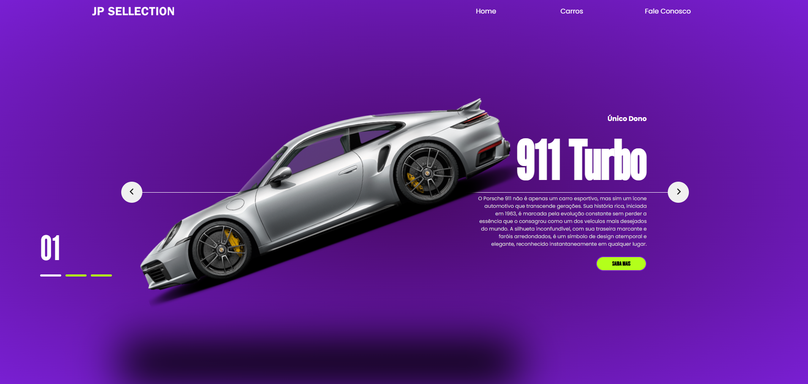
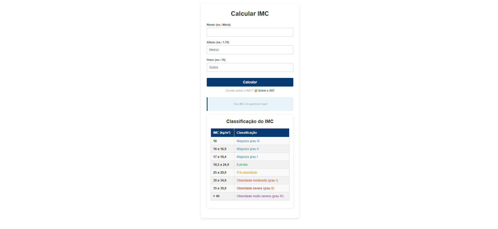
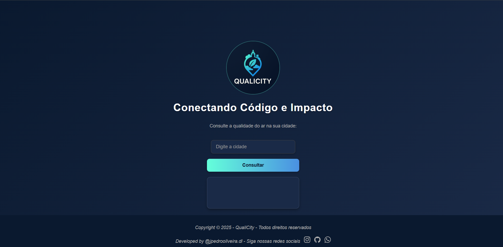
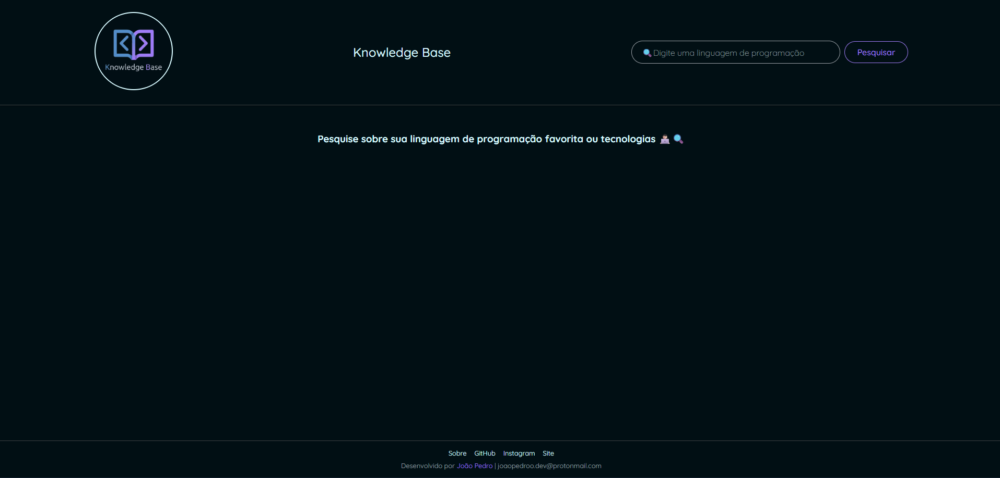

Olá, eu sou João Pedro
Desenvolvedor Fullstack | Sistema de Informação
Sou estudante de Sistemas de Informação, aprendendo cada dia mais sobre desenvolvimento web.
Estou
sempre em busca de novos conhecimentos e desafios para aprimorar minhas habilidades em tecnologia.
Sobre Mim
Sou estudante do 6º semestre de Sistemas de Informação, com um foco profundo em desenvolvimento Web. Minha jornada de estudos atual é inteiramente dedicada ao ecossistema JavaScript, focando em me tornar um desenvolvedor Fullstack proficiente com Node.js e Express.
Gosto de entender o funcionamento das aplicações de ponta a ponta: desde a criação de interfaces responsivas e acessíveis no frontend até a modelagem de bancos de dados e construção de APIs seguras no backend.
Minhas Habilidades
Meus Projetos

Jp-sellection
JP Sellection é uma vitrine digital mockup que simula a plataforma de uma concessionária de luxo, destacando habilidades em front-end e UI/UX.
Ver Projeto
Calculadora de IMC
A Calculadora de IMC é um projeto web simples e responsivo que permite calcular o Índice de Massa Corporal (IMC) de forma rápida e personalizada, mostrando ao usuário sua classificação de acordo com a OMS. Desenvolvida em HTML, CSS e JavaScript, a ferramenta inclui uma página explicativa sobre o IMC e oferece uma interface amigável e moderna.
Ver Projeto
QualiCity
Aplicação web que usa a geolocalização do navegador e a API-Ninjas Geocoding para converter coordenadas em nomes de cidades, demonstrando integração de APIs no frontend.
Ver Projeto
Knowledge Base
Página interativa para pesquisar e visualizar informações sobre linguagens de programação, frameworks e ferramentas de tecnologia.
Ver ProjetoMeus serviços
Desenvolvimento Web Institucional
Crio sites profissionais, modernos, otimizados e responsivos para atrair clientes e impulsionar o seu negócio na internet. Chegou a hora de ter uma presença online que gera resultados.
Menu para seu restaurante ou Hamburgueria
Transforme a experiência do seu cliente com um cardápio digital moderno e interativo. Crio menus otimizados, fáceis de usar e com fotos de alta qualidade para impulsionar suas vendas e agilizar o atendimento. Aumente o ticket médio e modernize seu negócio.
Manutenção e Infraestrutura TI
Serviços de formatação, otimização de sistemas operacionais e rotinas de backup seguro, garantindo a integridade dos dados e a performance dos equipamentos.
Contato
Vamos construir algo incrível juntos?
E-mail: joaopedroo.dev@protonmail.com